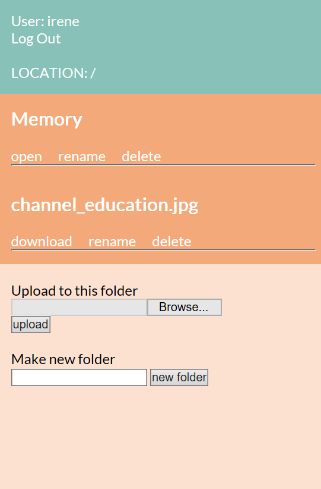

Volunteerize
A Group project for Software Engineering course provided by University of Saskatchewan.
The initial idea of this project is helping non-profit volunteer organization that still using pen and paper to recording their volunteer registration
Our group, Team_B, hopes to create software that will help to solve this problem. This software would keep track of information about each volunteer, allow for searching and filtering of volunteers, send mass emails to volunteers about specific events, keep a record of volunteer hours, keep a calendar of upcoming events and volunteer needs, coordinate and schedule volunteers, and keep statistics on volunteers in the organization.


